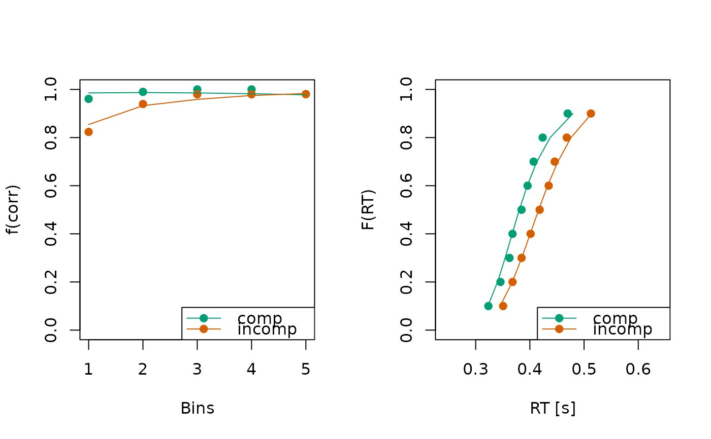

This function iterates over a list of statistics data, resulting from a call
to calc_stats(), and subsequently plots each statistic. It allows
for a simple arrangement of multiple plots on a single graphics device.
Usage
# S3 method for class 'stats_dm_list'
plot(x, ..., mfrow = NULL)Arguments
- x
an object of type
stats_dm_list, which is essentially a list of multiple statistics, resulting from a call tocalc_stats().- ...
additional arguments passed to the plot function for each individual
stats_dmobject inx.- mfrow
an optional numeric vector of length 2, specifying the number of rows and columns for arranging multiple panels in a single plot (e.g.,
c(1, 3)). Plots are provided sequentially ifNULL(default), using the current graphics layout of a user.
Details
The plot.stats_dm_list() function "merely" iterates over each entry of x
and calls the respective plot() method. If dRiftDM doesn't provide a
plot() method for an object stored in x, the respective entry is
skipped and a message is displayed.
When users want more control over each plot, it is best to call the
plot() function separately for each statistic in the list
(e.g., plot(x$cafs); plot(x$quantiles))
Examples
# get a list of statistics for demonstration purpose
all_fits <- get_example_fits("fits_ids_dm")
stats <- calc_stats(all_fits, type = c("cafs", "quantiles"))
# then call the plot function.
plot(stats, mfrow = c(1, 2))
#> Aggregating across ID
#> Aggregating across ID
